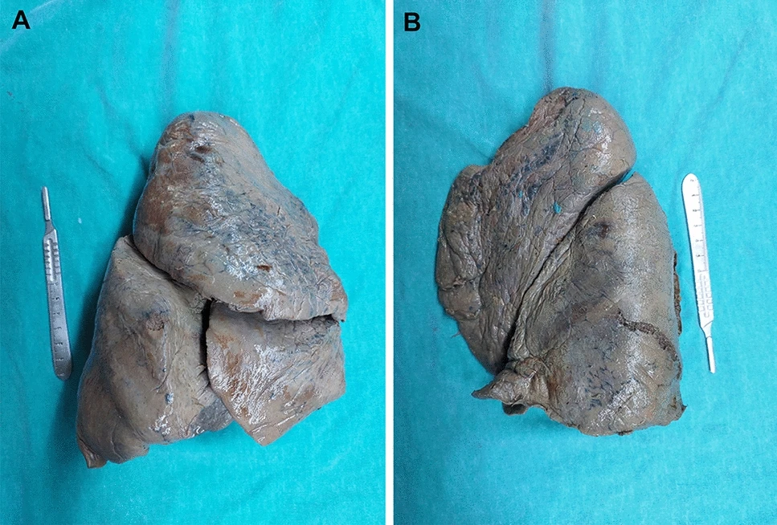
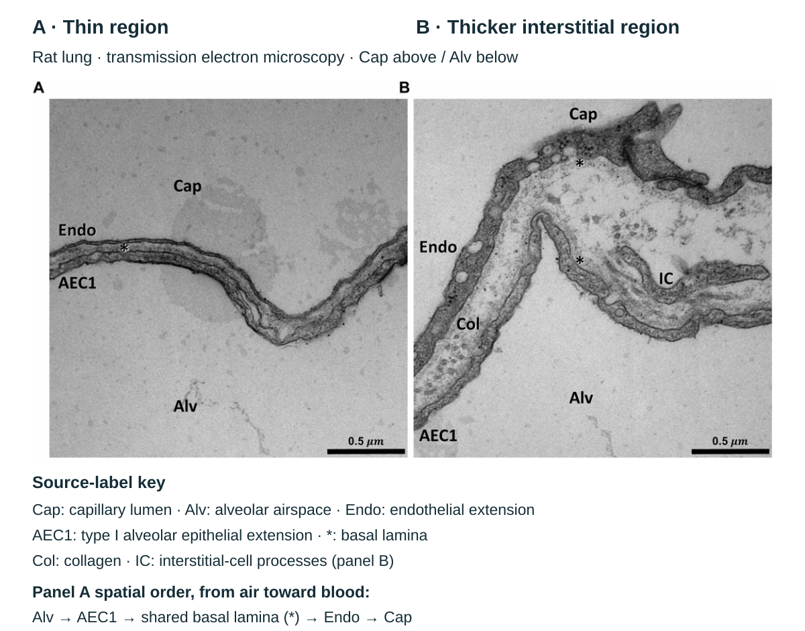
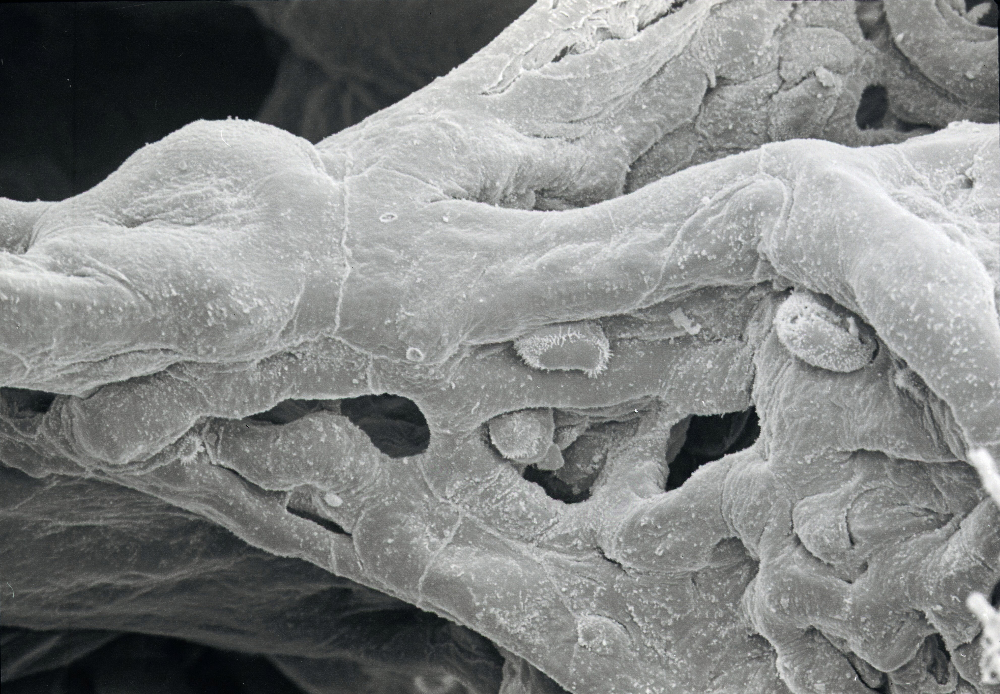

07. Airways, ventilation and hemoglobin
A person climbing stairs begins to breathe faster, yet faster breathing alone does not establish that more oxygen reaches working muscle. Air must reach an exchanging surface, oxygen must cross a thin barrier into perfused blood, and hemoglobin must load and later release it. These are different operations with different driving forces. Our running case compares two breathing patterns with the same total air movement, follows oxygen through the alveolar barrier, and asks what an affinity shift can—and cannot—tell us about tissue supply.
Official NPTEL L16–L17 supply the topic sequence. Complete caption texts and a reused bounded source-visual audit of seven contact sheets (119 sampled stills) and eight individual frames establish the source scope. Continuous video/audio was not reviewed. Original diagrams and computed traces are explanatory constructions rather than measured anatomy, breathing recordings or patient data. Corrections to source pressure units, dissolved-oxygen denominators and heme chemistry are identified where they matter. Evidence and model limits.
7.1 A conducting tree ends in a different kind of surface L16 02:08
Ventilation is bulk movement of gas between the environment and lungs. Gas exchange is transfer of particular gases across the air–blood barrier. Cellular respiration includes the metabolic reactions that use oxygen and produce carbon dioxide; it is not the movement of the chest. The connection among these processes is serial: interruption at one stage need not prevent motion or a normal-looking quantity at another stage. A moving chest does not prove an open airway, and an oxygen-loaded red cell does not prove adequate blood flow to every tissue.
The right lung normally has superior, middle and inferior lobes, separated by fissures; the left has superior and inferior lobes and accommodates the heart's position. Anatomical right and left refer to the person. A bronchus is a conducting airway supported by cartilage; the trachea divides into the main bronchi, which branch into lobar and smaller bronchi. Cartilage support changes from tracheal rings to bronchial plates and is absent from bronchioles. Bronchioles are smaller airways whose smooth muscle and surrounding tissue help determine caliber. These distinctions describe regional structure, not a universal diameter threshold that can identify every cut section.
The conducting zone carries, warms, humidifies and filters incoming air. Its terminal bronchioles precede the respiratory zone, which includes respiratory bronchioles, alveolar ducts and alveoli. An alveolus is a small air space whose wall contains the exchange surface. Alveoli communicate with the airway tree; they are not sealed balloons supplied with oxygen by blood. The thin exchange surface and its capillary network are a separate scale from the cartilaginous bronchus. Their spatial relationship is supported by the respiratory anatomy account; Figure 7.1 observes the lobar partition of fixed human lungs; the bronchial tree is explained in the text and is not depicted in that photograph.

A · Right lung: the source’s typical pattern has superior, middle and inferior lobes, separated by horizontal and oblique fissures.
B · Left lung: the source’s typical pattern has superior and inferior lobes, separated by an oblique fissure.
Figure 7.1. Observed human lung lobes and fissures. Whole source Figure 1, unchanged. Read the source A/B labels first, then compare the fissural clefts and lobar contours. These are isolated, formalin-fixed adult specimens from a study of 35 pairs of lungs. The source calls their fissural/lobar pattern normal; this does not establish globally healthy donors, living color or respiratory function. Individual photographed donor details and cross-panel donor correspondence are unreported.
The page arrangement does not define an anterior chest view. The visible instruments are source objects, not a calibrated image scale. Bronchial branches, pleural apposition/fluid and diaphragm relationships are not shown. Open the complete reference with Native/Fit enlargement and keyboard panning.
Yildirim et al. (2025), Is the Morphology of Lungs in Textbooks Normal? Fissure and Lobe Variations of the Lungs: A Cadaveric Study, Figure 1, Bratislava Medical Journal 126:1706–1715 · CC BY 4.0. Complete publisher-delivered 967 × 654 WebP; no crop, recoloring, resampling or added anatomical leaders. Source caption and preparation · Image provenance.
A change of cells accompanies a change of task L16 14:25
Many larger conducting airways have ciliated epithelial cells and mucus-producing goblet cells. A cilium is a motile cell-surface projection. Coordinated ciliary beating moves a mucus layer and entrapped material toward the pharynx, where it may be swallowed or expelled. The gas stream reverses each breath; net mucus clearance is directed toward the upper airway. Mucus production and ciliary transport must be coordinated: an immobile or excessively thick layer can retain material even when the airway remains open. Basal cells serve progenitor roles in appropriate conducting regions. Club cells in smaller airways contribute secretory, protective and regenerative functions. Cell distributions vary along the tree, so a single epithelial cartoon does not represent every branch.
The exchange surface has a different arrangement. Type I alveolar epithelial cells are thin cells forming much of the air-facing barrier. Type II cells synthesize and secrete pulmonary surfactant and participate in epithelial maintenance and repair. They also contribute to fluid handling and host defense. Barkauskas and colleagues used mouse lineage tracing to demonstrate type II cell self-renewal and generation of type I cells, with human cell culture providing a separate experimental context; this is evidence for repair capacity, not a promise of complete recovery after any human injury. Alveolar macrophages survey the air-space environment and remove material. Goblet cells and a carpet of motile cilia must not be placed across the normal thin alveolar exchange surface. Doing so would replace the mechanism one is trying to explain with the mechanism of an upstream conducting airway.
Pulmonary surfactant is a mixture of lipids and associated proteins at the alveolar air–liquid interface. Dipalmitoylphosphatidylcholine (DPPC) is a major surface-active phospholipid. The surfactant proteins SP-B and SP-C help its physical organization; SP-A and SP-D have important host-defense and regulatory roles. Surface tension is a force per unit length associated with an interface. Surfactant reduces the surface contribution to the effort needed to expand the lung and helps stabilize air spaces during changing lung volume. It is not simply a lubricant between lung and chest wall: that is a different interface with pleural fluid. Nor should its interface film be drawn as the same thing as a cell's lipid bilayer. The JCI surfactant commentary distinguishes its surface and host-defense roles.
The familiar isolated spherical interface relation $\Delta P=2\gamma/r$ relates pressure difference to surface tension $\gamma$ and radius $r$. It helps explain why interface forces can be consequential at small scale. A lung is an interconnected, deforming tissue with shared septa, nonuniform geometry and a surface film whose properties change with compression. The formula therefore does not establish that all small alveoli must empty into large ones, or provide a clinical collapse threshold. Elastic tissue and the air–liquid interface both contribute to recoil.
The gas barrier separates connected gas and blood compartments
A gas molecule leaving alveolar air encounters the surface liquid and surfactant region, alveolar epithelium, a thin interstitial/basement-membrane region and capillary endothelium before entering plasma. Oxygen then reaches the red-cell membrane and intracellular hemoglobin. Some basement membranes are closely apposed or fused in thin regions; Figure 7.2 separates them for clarity. Oxygen and carbon dioxide diffuse through this permeable fluid-and-cell pathway. There is no need to invent a macroscopic pore that lets red cells cross the intact barrier. Red cells remain in the capillary lumen.




Barrier injury changes more than diffusion distance. Epithelial or endothelial damage can increase permeability and allow fluid and proteins to accumulate where a thin, regulated interface should be. Inflammation recruits and activates immune cells; their mediators can both defend against a threat and contribute to injury. Surfactant function, fluid clearance and repair may also be disrupted. The L16 injured-alveolus image is a mechanistic comparison schematic, not a microscopic observation of one patient. Its multiple arrows should not be compressed into “inflammation always stops surfactant, therefore the lung collapses.” Causes, cellular targets, time courses and compensatory responses differ.
The lung also regulates its interface and circulating chemistry L16 22:06
Respiratory epithelia are barriers, sensors and active transport surfaces. Ion transport and water movement help regulate surface liquid; defense and repair require viable cells rather than only a thin passive sheet. Carbon dioxide removal also participates in acid–base regulation through the linked equilibrium $\mathrm{CO_2+H_2O\rightleftharpoons H_2CO_3\rightleftharpoons H^++HCO_3^-}$. Changing ventilation can change blood carbon dioxide and consequently pH, with buffering and renal regulation providing additional constraints and time scales. This is a chemical connection, not a claim that deeper breathing automatically corrects every acid–base disturbance.
The blood-facing pulmonary endothelium also handles vasoactive substances. Angiotensin-converting enzyme (ACE) is a luminal membrane-associated ectoenzyme: it converts angiotensin I to angiotensin II and contributes to bradykinin breakdown. Thus the source's “secreting ACE” wording is better understood here as an endothelial surface-processing function. Human indicator-dilution work directly assessed pulmonary endothelial ACE activity; a subsequent human study explicitly identifies its luminal location. These experiments support a local enzyme role within a wider renin–angiotensin and vascular system; they do not imply that lungs alone set arterial pressure.
Lung cells can take up and transform selected endogenous molecules and foreign compounds, including through cytochrome P450 enzymes. Uptake, temporary binding, metabolic conversion and elimination are different operations; metabolism can detoxify or bioactivate a compound. The extent depends on molecule, cell type, exposure and condition, so “the lungs metabolize drugs” cannot be turned into a dosing or safety rule. The pulmonary vessels also contain a variable volume of blood. Their recruitment and distension provide a vascular reservoir and affect left-heart filling. The non-respiratory-functions review supports these qualitative roles; the lecture's approximate fraction of total blood volume is not adopted as a universal constant.
7.2 Pressure differences move air; pleural coupling permits expansion L16 12:00
The visceral pleura covers the lung; parietal pleura lines the chest-wall side of the pleural space. A small lubricated space separates them. Mechanical coupling through this interface allows chest expansion to expand the lung. During quiet inspiration the diaphragm contracts and descends, while rib-cage motion expands the thorax. Pleural pressure becomes more negative relative to atmospheric pressure, increasing the pressure that distends the lung. Alveolar pressure falls slightly below pressure at the airway opening and air flows inward. During quiet expiration inspiratory muscles relax and recoil drives outward flow. Forced expiration recruits additional muscles and is not simply the quiet sequence played faster. The pressure account of breathing supports this sequence.
Let $P_{\rm atm}$ be pressure at the open airway, $P_{\rm alv}$ alveolar gas pressure and $P_{\rm pl}$ pleural pressure. Here pressures are gauge values relative to atmosphere, expressed in centimetres of water (cmH₂O); $P_{\rm atm}=0$ does not mean a vacuum. Transpulmonary pressure is $P_L=P_{\rm alv}-P_{\rm pl}$, a distending difference across the lung. It is distinct from the airway-driving difference $P_{\rm atm}-P_{\rm alv}$. With inward volume flow $q$ positive and airway resistance $R$ in cmH₂O·s/L, an ideal linear airway obeys
Here $V$ is lung gas volume in litres and $t$ is time in seconds. The first relation omits gas inertance and nonlinear flow resistance; the second treats the model gas as an incompressible volume for this modest pressure excursion, with no separate leak or gas-uptake volume sink. Neither equation says that negative pleural pressure alone determines flow. At the end of inspiration, $P_{\rm alv}$ can equal atmosphere, $q=0$, and $P_{\rm pl}$ can remain negative. The lung is held expanded even though bulk flow has stopped.
Compliance $C=dV/dP_L$ describes how much volume changes for a change in distending pressure; its units here are L/cmH₂O. Its inverse is elastance. A less compliant lung requires a larger pressure change for the same volume excursion. Resistance relates a pressure difference to flow and therefore has a different dimension and role. Increased resistance chiefly changes the pressure needed during flow in this simple construction, whereas compliance changes the recoil pressure associated with volume. Real lungs have volume-dependent properties, hysteresis, regional differences and airway closure. One constant $C$ and one constant $R$ cannot reproduce those processes.
A cycle whose curves must agree
For the laboratory, prescribe a smooth periodic volume rather than fit a person's respiratory effort. The baseline is $V_0=2.5$ L, tidal excursion (the volume change in one breath) $V_T=0.5$ L, period $T=4$ s, resistance $R=2$ cmH₂O·s/L and compliance $C=0.1$ L/cmH₂O. These are selected teaching values. The baseline recoil pressure is 5 cmH₂O. Define the excursion $v(t)=V(t)-V_0$ and use
All displayed quantities come from these equations at the same instant. At $t=1$ s, volume is 2.75 L, inward flow is 0.393 L/s, alveolar pressure is −0.785 cmH₂O and pleural pressure is −8.285 cmH₂O. At $t=2$ s, volume reaches 3 L, flow is zero, alveolar pressure is zero and pleural pressure is −10 cmH₂O. At $t=3$ s the volume is again 2.75 L but flow is outward: −0.393 L/s. The same volume can therefore occur with opposite flow and different pleural pressure.
Changing $R$ or $C$ in this laboratory changes the pressures required to perform the prescribed volume cycle. It does not predict how a person's tidal volume would respond to the same muscle effort. The diaphragm drawing follows normalized volume to communicate the sequence; its displacement is not a solved muscle or chest-wall model. In particular, the symmetric imposed expiration is not a quantitative model of passive expiration. A pressure-driven model would instead specify a muscle-pressure history and solve for volume. Keeping that causal boundary explicit prevents a visually convincing but unsupported claim about disease response.
Print alternative: inspiration increases volume while $q>0$ and $P_{\rm alv}<0$; at maximum volume $q=0$ and $P_{\rm alv}=0$ while $P_{\rm pl}=-10$ cmH₂O; expiration decreases volume while $q<0$ and $P_{\rm alv}>0$. At the baseline endpoint $P_{\rm pl}=-5$ cmH₂O. These states are reproduced by the equations and Python program.
Equal minute ventilation can conceal unequal alveolar ventilation
Tidal volume $V_T$ is the volume moved in one breath. Frequency $f$ is breaths per minute, so minute ventilation is $\dot V_E=fV_T$ in L/min. Some inspired gas occupies conducting airways and does not exchange with pulmonary capillary blood during that breath. This anatomical dead space is different from an alveolus that receives gas but little effective perfusion. Their combined functional impact belongs to physiological dead space; our arithmetic uses only a fixed conducting dead-space volume $V_D$.
For the stair-climbing case, set $V_D=0.15$ L as an illustrative adult-scale value, not a measured value for the person. Breathing 0.5 L at 15/min gives $\dot V_E=7.5$ L/min and $\dot V_A=5.25$ L/min. Breathing 0.25 L at 30/min gives the same 7.5 L/min total but only 3 L/min beyond dead space. Breathing 0.75 L at 10/min gives 6 L/min beyond it. The comparison explains why a breathing count alone cannot establish effective fresh-gas renewal. It is not an instruction to impose a breathing pattern during exertion: work of breathing, control, regional ventilation and perfusion remain outside the calculation.
7.3 Diffusion and hemoglobin binding are successive operations L17 08:06
Partial pressure is the contribution of one gas to a gas mixture's pressure; the corresponding dissolved-gas partial pressure describes its equilibrium with a gas phase. It is not the total amount of oxygen bound to hemoglobin. At fixed temperature and medium, Henry's law relates dissolved concentration to partial pressure. Binding can add a large reservoir of oxygen without raising dissolved partial pressure in direct proportion to total oxygen content. This is why a blood sample's $P_{\mathrm O_2}$ and its oxygen content answer different questions.
The L17 illustration uses alveolar $P_{\mathrm O_2}=104$ mmHg and entering-blood $P_{\mathrm O_2}=40$ mmHg. The latter blood is in the pulmonary artery, returning from systemic tissues to the lung; it is not a value for normally oxygenated systemic arterial blood. Their initial difference is $104-40=64$ mmHg. It is a pressure difference driving diffusion, not a new alveolar pressure, not a concentration of 64 units, and not a pressure that remains constant as the blood oxygenates. Oxygen moves toward the lower oxygen chemical potential, while carbon dioxide typically moves from incoming blood toward alveolar gas under its own gradient.
A simple steady barrier relation writes oxygen transfer rate as $\dot N=K\Delta P$, where $\dot N$ is amount per time and $K=DA/\ell$ is a conductance containing an effective diffusion/solubility coefficient $D$, exchange area $A$ and thickness $\ell$. The units of $D$ must be chosen so that $K$ has amount/(time·pressure). For the laboratory only relative conductance is used: baseline $K=1$ in defined arbitrary transfer units per mmHg. With a 64 mmHg difference the initial rate is 64 units/time; doubling thickness gives 32, and doubling both thickness and area restores 64. No human flux is inferred. A zero gradient gives zero net diffusive flux even though individual molecules continue moving in both directions.
Perfusion continually brings blood and removes oxygenated blood, whereas ventilation renews alveolar gas. The source's approach toward equilibrium in an early part of a capillary is a resting-condition illustration, not a guaranteed fraction of capillary length during exercise or disease. A smaller available time, impaired barrier, changed alveolar gas or mismatched regional ventilation and perfusion can change the result. The normalized path animation below shows the compartments and directions; it does not calculate capillary transit or equilibration time.
Open full-size gas-transfer animation and controls
Print keyframe: oversized transparent symbols at the reviewed barrier positions. Compare the pressure gradients and the numbered explanation below; no molecular timing or flux is measured.
Print alternative: conducting airway → terminal bronchiole → respiratory bronchiole/duct → alveolar air. Mucus clearance runs toward the pharynx in conducting airways. At the exchange surface, oxygen follows air → surface liquid → epithelium → thin interstitium → endothelium → plasma → red cell, while carbon dioxide follows the reverse gas-transfer direction under its own gradient. Blood flows within the capillary rather than through the air space.
Audit the denominator before quoting an oxygen percentage
The source slide prints a dissolved-oxygen coefficient of $3\times10^{-5}$ mL O₂(STPD)/(mL·torr). STPD means gas volume reported at standard temperature and pressure, dry; it is not the physical volume of a gas bubble inside blood. Taking torr and mmHg as equivalent at this teaching precision, multiplying by 100 mL/dL converts the coefficient to $0.003$ mL O₂/(dL·mmHg). At 100 mmHg this gives $0.3$ mL dissolved O₂ per dL. A percentage still requires a denominator.
The same slide's “3%/97%” partition and “0.3 mL out of 5 mL” do not share an established denominator: $0.3/5=0.06$, or 6%, not 3%. We therefore retain the dimensional calculation and do not silently adopt either partition. For an explicitly separate example, hemoglobin 15 g/dL, saturation 0.98 and a selected capacity coefficient 1.31 mL O₂/g give $1.31(15)(0.98)=19.257$ mL/dL bound oxygen; adding 0.3 gives 19.557 mL/dL total. These assumptions explain why dissolved oxygen is a small fraction here without declaring a universal fraction. This 1.31 coefficient and the 0.003 solubility convention are stated in the directly accessed OpenAnesthesia physiology account. Capacity conventions and the complete content/delivery calculation receive fuller treatment in Chapter 8. The gas-transport account supports the bound-versus-dissolved distinction.
Reversible oxygenation is not methemoglobin formation L17 10:01
Adult hemoglobin A is a tetramer with two α and two β globin chains. Each chain contains a heme, an iron-containing porphyrin group that can bind one oxygen molecule. A tetramer therefore has four oxygen-binding sites. In the usual physiological description, functional deoxyhemoglobin contains ferrous iron (FeII) and binds oxygen reversibly to form oxyhemoglobin. Oxidation to methemoglobin, with ferric iron (FeIII), creates a heme site that cannot perform ordinary reversible oxygen binding. Routine loading in the lung and unloading in tissue must not be taught as repeated formation and reduction of methemoglobin.
The source's 13:30 drawing actually labels oxyheme FeIII, so the issue cannot be dismissed as a caption transcription error. There is a deeper chemical qualification: the covalent Fe–O₂ bond can have mixed electronic character, and a ferric–superoxide contribution is a legitimate component of electronic-structure descriptions of oxyhemoglobin. Wilson and colleagues' X-ray absorption work compared solution and crystal states and interpreted their differences with a multiconfigurational description. Yan and colleagues' RIXS work likewise resolved mixed character rather than a simple match to a ferric reference. These findings do not equate oxygen-bound heme with methemoglobin. Formal oxidation labels used to discuss a bonded electronic wavefunction and the physiological distinction between oxygenation and damaging oxidation must be kept separate.
The proximal histidine is the globin residue directly coordinated to iron. The distal histidine helps shape and stabilize the ligand environment, including hydrogen-bond interactions with bound oxygen; oxygen is coordinated to iron rather than substituting a bond to distal histidine for that coordination. Movement and bonding changes at the heme communicate with the globin structure, as illustrated in the RCSB structural account. The mechanism is molecular coupling, not an ATP-powered pump that forces oxygen onto each site.
An equilibrium curve is not a stopwatch L17 16:07
Saturation $S$ is the fraction of available oxygen-binding sites occupied, ranging from zero to one. Affinity describes the tendency to bind at a specified oxygen pressure and condition. Hemoglobin shows positive cooperativity: oxygen binding shifts the ensemble toward higher-affinity conformations, making additional binding more favorable. The low-affinity T (“tense”) and high-affinity R (“relaxed”) descriptions organize this conformational coupling. They do not mean that the first oxygen cannot bind, or that all remaining sites must become occupied instantaneously after it does.
An oxygen dissociation curve plots equilibrium saturation against $P_{\mathrm O_2}$, with temperature, pH and other conditions specified. Its horizontal coordinate is pressure, not elapsed time. The source caption's “initial time point” at this curve is therefore replaced by a low-pressure point. A Hill relation provides a compact empirical description:
Here $p$ is oxygen partial pressure in mmHg, $P_{50}$ is the pressure at half saturation in the same units, and $n$ is a dimensionless empirical slope parameter. We choose $P_{50}=26$ mmHg and $n=2.7$ for an illustrative adult-like curve. The exponent is not a count of hemes and this expression is not a reaction-rate equation. It does not resolve all intermediate ligation states or guarantee an accurate fit at every pressure. It enforces useful checks: $S(P_{50})=0.5$, $S(0)=0$ and $S\to1$ as pressure becomes very large.
With these selected parameters, saturation is 97.69% at 104 mmHg, 76.19% at 40 mmHg and 33.00% at 20 mmHg. The relatively flat high-pressure region permits modest pressure changes with smaller saturation changes; the steeper intermediate region permits more unloading as tissue-side pressure falls. These values come from the stated equation, not from a sampled human blood curve. The laboratory's animated cursor sweeps the pressure parameter; its playback clock controls presentation only. The four heme symbols show mean occupancy, not a simulated sequence of stochastic binding events.
Print alternative: the baseline curve has $(p,S)=(20,0.330),(26,0.500),(40,0.762),(104,0.977)$. Raising $P_{50}$ to 34 mmHg gives $S(40)=0.608$ and $S(104)=0.953$. These are equilibrium parameter comparisons, not kinetic trajectories.
A shift has a specified comparison, not a predetermined clinical outcome L17 20:11
A right shift means higher $P_{50}$ and lower saturation at a fixed pressure, all else in the comparison specified. Lower pH, higher carbon dioxide, higher temperature and higher red-cell 2,3-bisphosphoglycerate (2,3-BPG) tend to shift adult hemoglobin's curve right. 2,3-BPG binds allosterically in a central cavity associated with deoxyhemoglobin's β chains and favors the lower-affinity state; it does not compete with oxygen for the iron coordination site. A left shift represents the opposite affinity change. Multiple changes can occur together, and their numerical effects are not captured merely by assigning a direction.
The Bohr effect concerns the influence of carbon dioxide and hydrogen ions on oxygen affinity. Tissue metabolism can increase carbon dioxide and lower local pH, favoring oxygen release at a given oxygen pressure. Protonation and carbon-dioxide-dependent interactions influence the conformational ensemble; the mechanism is not simply distal histidine grabbing oxygen away from iron. The Haldane effect is the influence of oxygenation state on carbon dioxide and hydrogen-ion carriage, a related but different relationship developed with carbon dioxide transport in Chapter 8. Neither name substitutes for specifying which gas, binding variable and comparison is changing.
To isolate affinity in the model, raise $P_{50}$ from 26 to 34 mmHg while keeping $n=2.7$. Saturation at 40 mmHg falls from 76.19% to 60.80%, while at 104 mmHg it falls from 97.69% to 95.34%. The modeled drop between these pressures therefore grows from 21.50 to 34.54 percentage points. That is a larger fractional unloading opportunity under those two specified pressures, not proof of a larger amount delivered per minute. Hemoglobin concentration, incoming oxygenation, tissue pressure, extraction, blood flow and metabolic demand also matter. Severe loss of loading pressure can make an affinity change's consequences different from this comparison.
The RCSB fetal-hemoglobin account explains how fetal hemoglobin's different chain composition reduces its interaction with 2,3-BPG and contributes to higher oxygen affinity relative to adult hemoglobin under matched conditions. Placental exchange involves two circulations and their pressures and flows, so the affinity difference is one part of the explanation rather than an independent pump. Myoglobin, by contrast, is a monomeric heme protein in muscle with one oxygen-binding site and no intersubunit cooperativity. An illustrative one-site relation $S_{\rm Mb}=p/(3+p)$ uses a selected half-saturation pressure of 3 mmHg on the same pressure axis. Its high affinity at low pressure supports its role in intracellular oxygen handling. Different curve shapes arise from binding architecture and energetics, not from an unsupported claim that a “linear geometry” makes myoglobin bind instantaneously.
Return to the stair climber. A fall in muscle oxygen pressure, local heat and increased carbon dioxide can favor unloading, but muscle receives oxygen only if oxygenated blood reaches it. Oxygen must diffuse from capillary plasma through interstitium into cells and toward sites of consumption. Ventilation governs one upstream renewal process; affinity governs one storage-and-release relation. Oxygen content is amount per blood volume, while delivery is amount carried to a tissue per time and therefore depends on blood flow as well as content. A pressure, saturation or breathing count alone cannot determine delivery. This separation is the bridge to Chapter 8's integrated gas-transport calculation.
7.4 Six worked problems
1. Locate the failed process
A schematic shows mucus moving toward an alveolus, cilia lining the gas barrier, and a red cell crossing into air to collect oxygen. Identify and repair each error.
Worked solution
Mucociliary clearance moves entrapped material toward the pharynx in conducting airways, rather than delivering it to the gas-exchange surface. The normal alveolar barrier uses thin type I cells with type II cells and other supporting populations; a goblet/ciliated conducting epithelium would misrepresent that region. The red cell belongs within the capillary lumen. Draw oxygen diffusing across surface liquid, alveolar epithelium, the thin intervening region and endothelium into plasma, then into the red cell. Draw carbon dioxide in the reverse gas-transfer direction under its own gradient. These corrections preserve three distinct transports: mucus clearance, gas diffusion and vascular blood flow.
2. Derive the flow and identify a zero-flow state
Differentiate the prescribed $v(t)$ and evaluate volume, flow and both pressures at 2 s. Explain why negative pleural pressure is compatible with zero flow.
Worked solution
Differentiation gives $q=(V_T/2)(2\pi/T)\sin(2\pi t/T)=\pi V_T\sin(2\pi t/T)/T$. At 2 s the phase is $\pi$, so $v=0.5$ L and $V=3$ L, while $q=0$. Hence $P_{\rm alv}=-Rq=0$. Recoil is $5+0.5/0.1=10$ cmH₂O and $P_{\rm pl}=0-10=-10$ cmH₂O. The airway-driving difference is zero, so there is no bulk flow. The transpulmonary difference remains positive and supports the expanded lung. A plot showing inward flow at this exact maximum-volume endpoint would violate the specified mass balance.
3. Compare shallow and deeper breathing
For fixed $V_D=0.15$ L, compare 0.25 L at 30/min with 0.75 L at 10/min. Can equal minute ventilation establish equal gas exchange?
Worked solution
Both give $\dot V_E=7.5$ L/min. The first gives $\dot V_A=30(0.25-0.15)=3$ L/min; the second gives $10(0.75-0.15)=6$ L/min. Under this fixed-dead-space model, the deeper pattern renews twice as much gas beyond conducting dead space. Equal total air movement therefore does not imply equal effective renewal. Even equal $\dot V_A$ would not establish equal oxygen transfer without alveolar gas, barrier conductance and perfusion information. The calculation does not choose an optimal or safe breathing pattern for an individual.
4. Repair a diffusion and unit argument
Use the lecture's 104 and 40 mmHg values. If barrier thickness doubles at fixed area and initial pressures, what happens to relative flux? Convert the printed Henry coefficient and test “0.3 out of 5 is 3%.”
Worked solution
The incoming 40 mmHg is pulmonary arterial blood. The initial pressure difference is 64 mmHg. Because $K\propto1/\ell$, doubling thickness halves initial flux: from 64 to 32 arbitrary units/time for the chosen baseline conductance. The blood pressure does not become 64 mmHg; the gradient decreases as blood oxygenates. Multiplying $3\times10^{-5}$ mL O₂/(mL·mmHg) by 100 mL/dL gives 0.003 mL O₂/(dL·mmHg). At 100 mmHg this gives 0.3 mL/dL. Finally $0.3/5=0.06=6\%$. A 3% statement requires a different denominator; none is established by these numbers. Report the dimensional result rather than inventing a correction.
5. Quantify a right shift without claiming delivery
Using $n=2.7$, compare $P_{50}=26$ and 34 mmHg at 104 and 40 mmHg. Compute unloading fractions and state what additional information is needed for oxygen delivery.
Worked solution
Evaluate $S=1/[1+(P_{50}/p)^{2.7}]$. The baseline gives $S(104)=0.976865$ and $S(40)=0.761898$, a difference 0.214967, or 21.50 percentage points. The shifted curve gives 0.953411 and 0.607973, a difference 0.345438, or 34.54 percentage points. Higher $P_{50}$ lowers affinity at both pressures but increases this pressure-pair's fractional release. Converting that difference into amount per blood volume requires hemoglobin concentration and capacity, plus the dissolved contribution. Converting content into delivery per minute requires blood flow. Regional tissue pressure and demand are also needed to decide whether supply is adequate. A right shift alone is not a diagnosis of good or bad delivery.
6. Separate physiology, electronic structure and kinetics
A reader concludes that every normal inspiration oxidizes FeII to methemoglobin because the source oxyheme drawing says FeIII. Another claims that a 12-second curve animation measures binding speed. Evaluate both.
Worked solution
Normal oxygenation is reversible ligand binding, physiologically distinguished from methemoglobin formation. The source FeIII label is visible, but oxygen-bound heme can have mixed FeII–O₂ and FeIII–superoxide electronic character in quantum descriptions. That does not make oxyhemoglobin the same species as methemoglobin; the ligand, charge distribution and functional chemistry must be specified. The pressure–saturation graph is an equilibrium relation. Its horizontal axis is mmHg, and the animation clock merely chooses which pressure to display. A binding-speed claim would require a kinetic model, rate constants, experimental conditions and time-resolved evidence, none of which the Hill curve supplies.
7.5 Reproduce the checks and retain their boundaries
The standard-library Python program reproduces every model value used above and tests 1,001 mechanical states. Run python code/ch07_respiration.py from the book directory. It checks the volume derivative against flow, both pressure identities, periodicity, bounds, zero tidal excursion, the zero-resistance limit, resistance scaling and compliance changes. In that ideal limit the required airway pressure drop vanishes at prescribed flow; the quotient form of the flow law is used only for positive resistance. Its maximum central-difference mass-balance residual is approximately $3.81\times10^{-11}$ L/s for the stated step; this is numerical agreement with the prescribed equation, not a physiological measurement uncertainty. Saturation checks include zero pressure, half saturation, the high-pressure limit, monotonicity and a right shift. Diffusion checks include zero/reversed gradients and area/thickness scaling.
The JavaScript source uses the same equations and units. The mechanics model omits compressibility, uptake volume effects, regional ventilation, recruitment, hysteresis, muscle energetics and a solved chest wall. The diffusion example is a steady relative-conductance comparison, not a transient solution for alveolar or capillary gas. The Hill model is an empirical equilibrium relation, not molecular kinetics or a pulse-oximeter algorithm. No curve or control is calibrated to a patient, and no clinical threshold, oxygen prescription or treatment decision follows from the laboratory.
7.6 Source scope, verification and original work
- Course evidence: official L16 and L17, with complete locally acquired caption texts. The reused private visual audit actually inspected all seven 30-second contact sheets and eight named individual 640×360 frames. It can miss transient annotations between sampled times and does not establish continuous audio/video review. Source slides remain private and are not copied here.
- Anatomy, breathing and gas transport: directly opened OpenStax 22.1, 22.3, 22.4 and 22.5 for named structures, pressure-gradient breathing, diffusion and binding distinctions. Textual relationships inform original schematics; no OpenStax artwork is reproduced. The directly read JCI surfactant commentary supplies physical-versus-defense context; Barkauskas et al. (2013), DOI 10.1172/JCI68782 supplies primary mouse-lineage and separate human-culture repair evidence. The official RCSB hemoglobin and fetal hemoglobin accounts were directly accessed for structural coupling and BPG context. Teaching accounts are distinguished from primary experiments.
- Electronic structure: directly accessed relevant full-text sections of Wilson et al. (2013), DOI 10.1073/pnas.1315734110 and Yan et al. (2019), DOI 10.1073/pnas.1815981116. Their spectroscopy and model-dependent mixed-state interpretations qualify simple oxidation labels; they are not kinetic measurements of this chapter's Hill curve.
- Pulmonary endothelial metabolism: directly read PubMed abstracts of Orfanos et al. (1999), DOI 10.1161/01.CIR.99.12.1593 and Cziraki et al. (2000), DOI 10.1016/S0306-3623(01)00110-0; publisher full texts were not used. Directly accessed the five-page Joseph et al. non-respiratory-functions review (2013), DOI 10.1093/bjaceaccp/mks060 for qualitative reservoir, bradykinin and metabolic context. No dosing, fixed blood-volume fraction or universal drug extraction claim is adopted.
- Access limits: initial PMC pages for endothelial injury (PMC7110599), the oxygen dissociation review (PMC4666443) and alveolar epithelium (PMC7152382) returned bibliographic/landing text but subsequent targeted requests encountered reCAPTCHA. The NCBI surfactant book page also failed or returned reCAPTCHA, and a BPG PubMed endpoint returned only a footer. They are not treated as complete readings. Search snippets alone were not used as proof of a mechanism. Scientific checks here concern the stated educational claims, with access recorded on 4 November 2026; no current diagnostic guideline or clinical algorithm is asserted.
- Original constructions: The quiet-breathing mechanics drawing is an original, reference-informed, unscaled schematic. Figure 7.1 reproduces the credited, CC BY 4.0 fixed-human-lung photograph by Yildirim et al. (2025) for lobes and fissures only; it does not depict the bronchial tree, pleural interface or diaphragm. Figure 7.2 uses the attributed rat TEM identified in its caption; the gas-transfer overlay keeps that tissue image fixed. The complementary SEM, ciliary-culture recordings and forced-expiration MRI are separate source observations, not registered views of one specimen. Pressure/volume curves, selected Hill parameters, relative flux units and animation durations are transparent teaching choices. The running case is hypothetical. Figure 7.1 supplies fixed-specimen surface appearance, not living color, function or measured airway geometry. Complete airway, pleural and diaphragm anatomical coverage remains pending.
- Additional independent observations: bronchial SEM and Gsell et al. culture Movie S2 support ciliated surface architecture and specifically labelled culture motion, not direct mucus transport or a whole normal airway. Wens et al. healthy-volunteer forced-FEV₁ MRI supplies qualitative lung-base excursion, separately from the synthetic quiet-breathing mechanics model. Bos et al. (2023) Movie S1 separately observes stained mucus-bundle movement on an opened pig tracheal explant; it is not registered to the SEM or Gsell cultures and does not resolve individual cilia or demonstrate goblet-cell attachment causality. The culture timing, separate sampling days, Bos experiment/export-time mismatch and MRI file/acquisition-time limits remain attached to their respective observations.